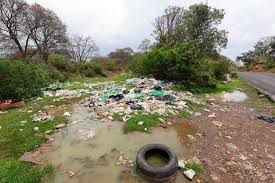
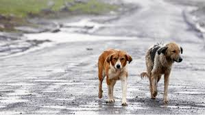
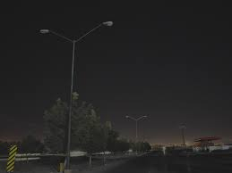
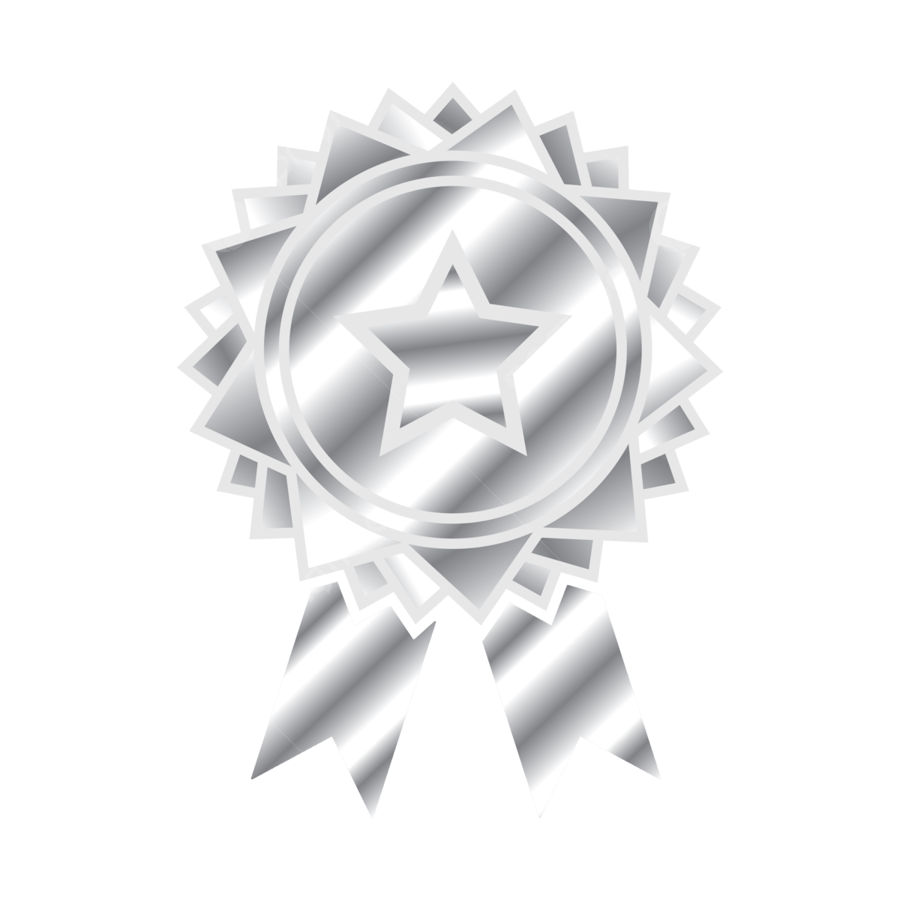

Plataforma de Reportes Comunitarios
Un lugar donde todos podemos ser parte.
Los vecinos y empresas pueden reportar problemas y colaborar en la solución.
Sumate
Baches
Cuidar nuestras calles es responsabilidad de todos. Cada bache que se forma en la vía pública no sólo afecta la circulación vehicular, sino que puede provocar accidentes, dañar vehículos y poner en riesgo a quienes se trasladan a pie, en bicicleta o en moto. Por eso, los invitamos a participar activamente reportando el avistamiento de baches en cualquier barrio o localidad del distrito. Su colaboración es fundamental: cada reporte nos ayuda a intervenir más rápido, priorizar arreglos y mejorar la seguridad vial en toda nuestra comunidad. Las empresas locales también cumplen un rol central, aportando soluciones, recursos o simplemente difundiendo esta iniciativa. Entre todos podemos lograr calles más seguras, transitables y una ciudad mejor cuidada para las familias de Rivadavia.
Sumate 🚧
Tiraderos ilegales de basura
Los tiraderos ilegales de basura afectan directamente la salud pública, contaminan el ambiente, deterioran espacios compartidos y generan focos de riesgo para toda la comunidad. Mantener nuestros barrios limpios es una tarea que nos involucra a todos. Por eso, los invitamos a colaborar reportando cualquier lugar donde se detecte basura arrojada fuera de los espacios autorizados. Esta información permite actuar con mayor rapidez, mejorar la higiene urbana y preservar la calidad de vida en nuestras localidades. Las empresas del medio también pueden sumarse brindando apoyo, participando en acciones de limpieza o simplemente difundiendo buenas prácticas ambientales. Entre todos podemos lograr un entorno más limpio y saludable para las familias de Rivadavia.
Sumate 🗑
Animales encontrados/perdidos
Los casos de animales perdidos o encontrados en la vía pública requieren la colaboración de toda la comunidad. Cada mascota extraviada representa una familia angustiada y un animal expuesto a riesgos. Identificar rápidamente su ubicación y avisar a quienes corresponda permite aumentar las chances de reencuentro. Por eso, los invitamos a reportar de manera inmediata la presencia de animales sin dueño visible o encontrados en cualquier barrio o localidad del distrito. Esta información ayuda a coordinar acciones, difundir avisos y facilitar el contacto con sus responsables. Las empresas locales también pueden aportar compartiendo publicaciones, ofreciendo espacios o recursos para resguardo temporal. Entre todos podemos promover el cuidado responsable, la protección animal y la importancia de actuar a tiempo.
Sumate 🐶
Luminarias apagadas
La detección y el reporte de luminarias apagadas es fundamental para garantizar una ciudad más segura y transitable durante la noche. La falta de iluminación puede favorecer accidentes, dificultar la circulación y afectar la sensación de seguridad en nuestros barrios. Por eso, los invitamos a informar cualquier luminaria que se encuentre apagada o con fallas en cualquier punto del distrito. Cada reporte contribuye a organizar mejor las intervenciones, priorizar reparaciones y mejorar la iluminación general del espacio urbano. Las empresas locales también pueden colaborar difundiendo esta iniciativa, aportando soluciones o acompañando acciones de mantenimiento. Entre todos podemos construir espacios más cuidados, iluminados y seguros para las familias de Rivadavia.
Sumate 💡Te contamos como sumar puntos!
👥 Para Vecinos
Cada vez que un vecino realiza un reporte sobre un problema en la vía pública, como un bache, una luminaria apagada, basura en lugares no permitidos o un animal perdido, suma puntos dentro de la plataforma. Estos puntos reconocen el compromiso ciudadano y pueden dar lugar a menciones, premios o acciones especiales por parte de la Municipalidad. Los reportes permiten que el municipio identifique más rápido cada situación y pueda asignar un estado: pendiente, en proceso o resuelto, informando así el avance de cada caso. Además, se podrá acceder a un panel con estadísticas que muestran cuáles son los barrios más activos y los problemas más frecuentes. Esto nos ayuda a intervenir con mayor precisión y mejorar la calidad de vida en cada localidad del Partido de Rivadavia. Sumarte es muy fácil, solo tenés que registrarte, observar tu entorno y reportar cuando detectes algún inconveniente. Entre todos hacemos una ciudad más segura, limpia y cuidada.
🏢 Para Empresas
Las empresas del Partido de Rivadavia también pueden participar activamente ofreciendo materiales, servicios o colaboración para resolver los problemas reportados. Cada aporte suma puntos, reflejando el compromiso social y fortaleciendo el vínculo con la comunidad. La plataforma permite visualizar los reportes, conocer las necesidades del entorno y decidir de qué manera colaborar. El municipio asigna estados a cada caso, lo que permite priorizar acciones y coordinar mejor las intervenciones cuando una empresa pueda ayudar. Las empresas también podrán ver estadísticas y conocer cuáles son los barrios más activos, los tipos de problemas más frecuentes y dónde existe mayor necesidad de acción. Participar significa ser parte de una comunidad más segura y responsable, generando impacto real y visible. Entre todos, construimos un Rivadavia mejor.
Sumate 😀✔ Uso responsable de la plataforma
Esta plataforma fue creada para fortalecer la participación ciudadana y la colaboración entre vecinos, empresas y el municipio, con el objetivo de mejorar la calidad de vida en la comunidad. Para que este espacio funcione de manera justa y efectiva, es fundamental que todos los participantes hagan un uso responsable y honesto del sistema. Cuando un usuario genere dos reportes falsos, intencionalmente incorrectos o que no representen una situación real, el sistema aplicará una suspensión temporal de su cuenta. De igual modo, si una empresa declara dos colaboraciones que no se concretan en la práctica, su actividad dentro de la plataforma será suspendida de forma preventiva. Durante el período de suspensión, el municipio realizará una evaluación de la situación, analizando los reportes o colaboraciones cuestionadas y determinando las acciones correspondientes. Esta medida no tiene un fin punitivo, sino preventivo, buscando resguardar la transparencia y la confianza de toda la comunidad. En estos casos, los usuarios o empresas perderán únicamente los puntos obtenidos por los reportes o colaboraciones falsas, mientras que los aportes correctos y verificados serán preservados. De esta manera, se reconoce el compromiso genuino y se desalienta el uso indebido de la plataforma. El respeto por estas normas permite que el sistema siga siendo una herramienta confiable, equitativa y útil para todos, promoviendo una comunidad más participativa, solidaria y responsable.

Insignia de plata
“Cada reporte es un acto de compromiso. Con 10 aportes a la comunidad, tu participación se reconoce con la Insignia de Plata: un símbolo de tu compromiso con un Rivadavia más cuidado, solidario y participativo.”
Insignia dorada
“Cuando el compromiso crece, el impacto se multiplica. Con 50 reportes realizados, tu participación es reconocida con la Insignia Dorada: un símbolo de constancia, responsabilidad y aporte activo a una comunidad que mejora gracias al esfuerzo de todos.”
Insignia de diamante
“La excelencia se construye con constancia. Al alcanzar 100 reportes, tu compromiso con la comunidad se transforma en la Insignia de Diamante: un reconocimiento a quienes colaboran de manera sostenida, generan un impacto real y ayudan a construir una comunidad más segura, solidaria y participativa. Este logro será destacado con una mención especial y reconocimiento en el Palacio Municipal, como ejemplo de participación y responsabilidad ciudadana.”